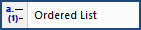
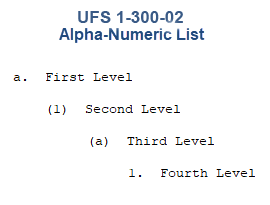
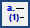
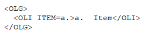
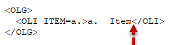
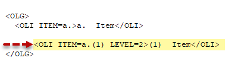
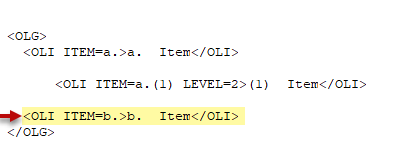

This command can be executed from the SI Editor's Tagsbar.
The SI Editor's Ordered List adheres to the alternating alpha-numeric sequence and format with the Unified Facilities Guide Specifications (UFGS) Format Standard UFS 1-300-02, Table A-1.

This conversion process aims to optimize list formatting by replacing manual lists that use LST and ITM tags with automatically generated Ordered Lists with alphanumeric numbering, wherever possible.
 To learn more about converting a manual Ordered List, see the Process menu > Convert Manual Lists to Order Automatically topic.
To learn more about converting a manual Ordered List, see the Process menu > Convert Manual Lists to Order Automatically topic.
 It is essential to have the most recent SpecsIntact version installed before initiating the conversion process. To check the installed software version, refer to the Help menu > About SpecsIntact.
It is essential to have the most recent SpecsIntact version installed before initiating the conversion process. To check the installed software version, refer to the Help menu > About SpecsIntact.
While the conversion process aims to transform LST and ITM-based lists into ordered lists, certain limitations may prevent some lists from being converted successfully. These exceptions include:
The multi-level alpha-numeric list will be surrounded by the Ordered List Group (OLG) tag, followed by four levels of Ordered List (OLI) tags. These lists will automatically re-letter, renumber, and ensure proper word wrapping for each level.
On the SI Editor's Tagsbar, click the Ordered List

button



 After leaving the Ordered List, press F2 to insert the last tag used. To resume editing an Ordered List, either re-select the Ordered List button on the Tagsbar or copy and paste an existing OLI Item, then delete its content to re-establish the list structure for you to continue editing.
After leaving the Ordered List, press F2 to insert the last tag used. To resume editing an Ordered List, either re-select the Ordered List button on the Tagsbar or copy and paste an existing OLI Item, then delete its content to re-establish the list structure for you to continue editing.
Users are encouraged to visit the SpecsIntact Website's Support & Help Center for access to all of our User Tools, including Web-Based Help (containing Troubleshooting, Frequently Asked Questions (FAQs), Technical Notes, and Known Problems), eLearning Modules (video tutorials), and printable Guides.
| CONTACT US: | ||
| 256.895.5505 | ||
| SpecsIntact@usace.army.mil | ||
| SpecsIntact.wbdg.org | ||